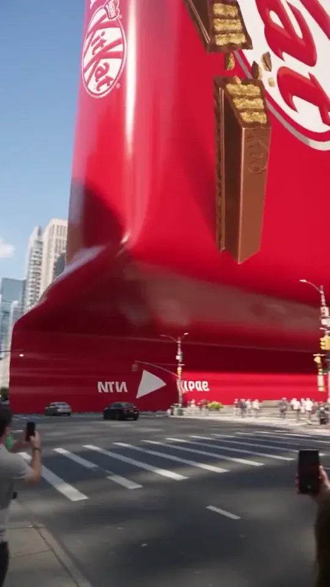
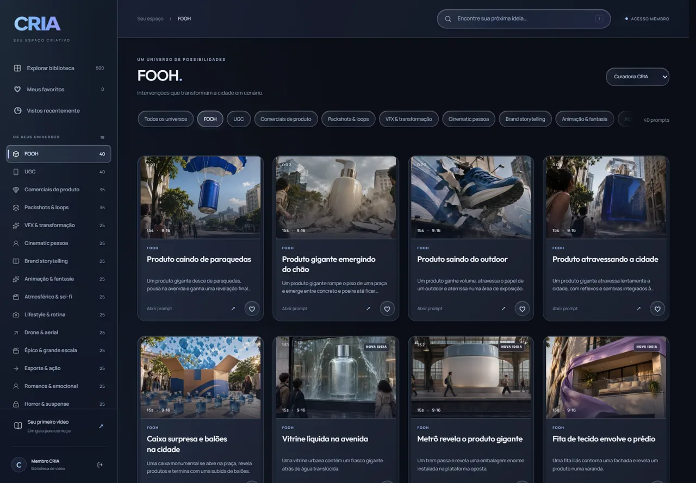
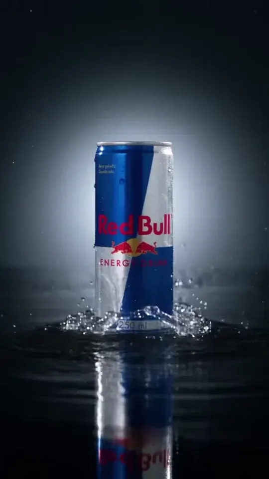
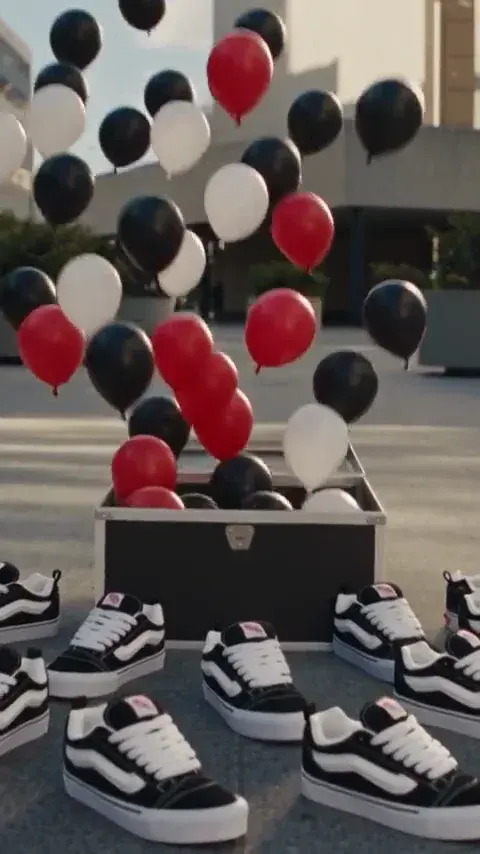
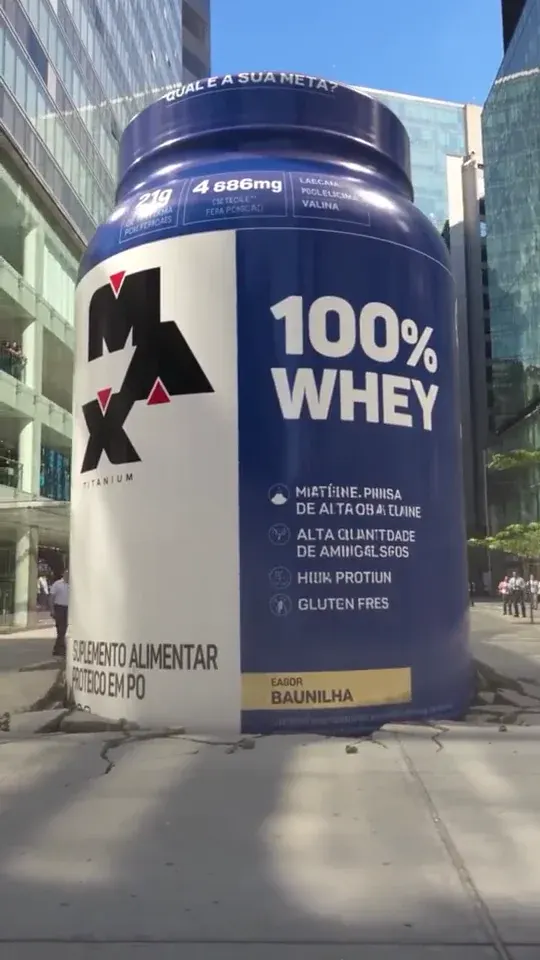
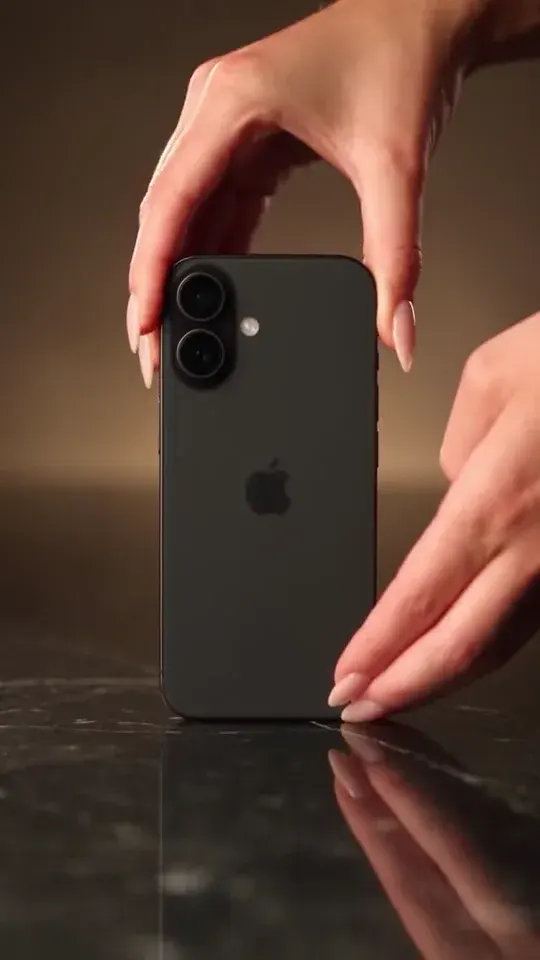
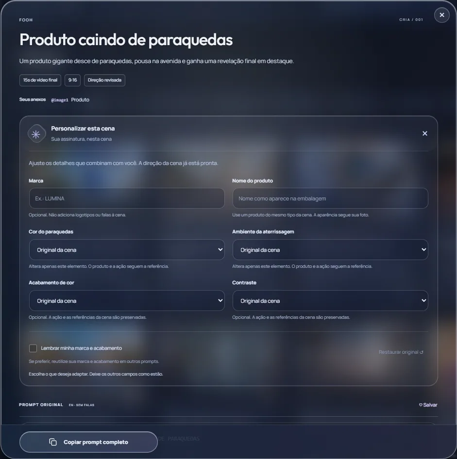

O produto vira acontecimento
Uma intervenção em escala gigante, integrada à cidade.
500 prompts de vídeo para transformar boas ideias em cenas que merecem ser vistas. Escolha, personalize e leve para a sua IA.
Ferramentas e créditos de IA contratados separadamente.

Mais repertório.
Menos página em branco.
De uma intervenção impossível na cidade a um produto apresentado com naturalidade. Veja exemplos de aplicação dos prompts.
VÍDEOS DE EXEMPLO · CARREGAM AO CLICAR
Uma intervenção em escala gigante, integrada à cidade.
Apresentação próxima, com linguagem de conteúdo social.

Luz, movimento e textura para valorizar a embalagem.

Surpresa visual com um produto que ocupa o espaço urbano.

O impossível encontra uma cena do cotidiano.
Um contexto de uso simples para uma comunicação natural.

Um unboxing que apresenta o produto em poucos segundos.
Uma marca ganha protagonismo em uma cena urbana.
Resultados variam conforme a ferramenta, o modelo e as referências utilizadas.
Cada cena tem uma prévia visual, um nome claro e um resumo. Encontre o que faz sentido para o seu projeto antes de abrir o texto.
Produtos gigantes. Ideias impossíveis. A cidade como cenário.

Conteúdo próximo, demonstrações e situações de uso para marcas.
Narrativa, textura e movimento para apresentar o que a marca faz.

A embalagem, o detalhe e a luz assumem o protagonismo.
De histórias íntimas a mundos que só a imaginação alcança.
500 prompts no total. Capas ilustram um frame da cena e servem como referência visual.

Use o personalizador para ajustar os campos preparados em cada cena. Copie a sua versão ou volte ao original em um clique.
Defina o projeto, a direção de cor e o contraste.
Campos de produto, pessoa e outros detalhes aparecem quando o prompt oferece essa adaptação.
Abra o card, leia o resumo e leve o prompt para a IA que você usa.
Funciona na própria biblioteca, sem API paga. A geração de vídeo é feita na sua ferramenta de IA.
Para criadores, profissionais de conteúdo e marcas que querem chegar à ideia com mais clareza.
Explore as categorias ou busque uma ideia. Salve os favoritos e retome o que viu recentemente.
Leia o resumo, confira a direção e ajuste os campos disponíveis para a sua marca ou referência.
Cole o prompt na ferramenta de vídeo com IA escolhida, adicione as referências e refine o resultado.
Mais do que uma ideia solta: câmera, luz, ação, ritmo e acabamento orientam a cena.
Sou Douglas Ferreira, o DG VFX. Trabalho com conteúdo visual, efeitos e inteligência artificial. O CRIA reúne ideias com direção para ajudar você a sair do “o que eu posso fazer?” e começar a construir.
Esta nova versão é focada em vídeo: uma experiência visual para encontrar, adaptar e colocar as ideias em movimento.
Conheça meu trabalhoUma biblioteca para voltar sempre que um projeto pedir uma nova ideia. Escolha o seu universo e comece.
Você tem 7 dias de garantia para conhecer o CRIA. Se não for para você, solicite o reembolso integral.
Sua próxima ideia começa por
à vista · pagamento único
Acesso enviado por e-mail após a confirmação do pagamento.
Sem mensalidade do CRIA. Contas e créditos de ferramentas de IA são contratados separadamente.
As respostas para escolher o CRIA com tranquilidade.
Falar com o suporteAcesso à biblioteca com 500 prompts de vídeo em 18 categorias, uma prévia visual e um resumo por prompt, personalizador, busca, filtros, favoritos e histórico recente. Você escolhe uma ideia, abre o prompt e copia para usar na sua ferramenta de IA.
O CRIA é uma biblioteca de prompts. A geração acontece na ferramenta de vídeo com IA que você escolher. Contas, assinaturas e créditos dessas ferramentas são contratados separadamente e não estão incluídos no valor do pack.
Todos os prompts foram adaptados para vídeos de até 15 segundos; alguns loops são mais curtos. São 350 prompts em 9:16 e 150 em 16:9. O formato horizontal fica nas categorias Cinematic pessoa, Animação & fantasia, Atmosférico & sci-fi, Drone & aerial, Microcinema & curta e Esporte & ação.
Você pode ajustar os campos preparados em cada prompt, como marca ou projeto, acabamento de cor e contraste. Prompts com referências específicas também oferecem campos de produto ou pessoa, e alguns incluem ambiente, cor de destaque ou informações verificadas. O texto é montado na própria página, sem API paga. Ele não reescreve qualquer pedido livre com IA. Você pode restaurar o original a qualquer momento.
A interface e os resumos estão em português. Os prompts são escritos em inglês, com instruções de diálogo em português brasileiro quando a cena pede. Todos os 40 prompts de FOOH são sem falas, narração, vozes ao fundo ou canto.
As capas são referências de um único frame para ajudar a entender a ideia. Os vídeos desta página são exemplos de aplicação e não correspondem necessariamente a cada capa. O resultado varia conforme a IA, o modelo, os parâmetros e as referências utilizadas. Não há promessa de reprodução idêntica.
Depende da cena e da ferramenta escolhida. Quando o prompt pede uma referência, use uma imagem nítida do produto, pessoa ou embalagem e confira como sua IA aceita esse material. Para trabalhos de marca, revise a fidelidade da embalagem, logotipos e detalhes antes de publicar.
Sim. Você pode usar os prompts em projetos pessoais e profissionais, inclusive para clientes. Confira também as regras de uso comercial da ferramenta de IA escolhida e os direitos sobre marcas, pessoas, músicas e materiais de referência. O acesso à biblioteca é individual.
Depois da confirmação do pagamento na Kiwify, você recebe as instruções de acesso pelo e-mail informado na compra. A compra do CRIA é única, sem mensalidade do pack, e inclui as atualizações. As condições de parcelamento são exibidas no checkout.
Você tem 7 dias de garantia para conhecer o material. Se quiser solicitar o reembolso nesse prazo, use as instruções da compra na Kiwify ou entre em contato com o suporte. A devolução é integral, conforme a garantia da oferta.
Cadastre seus contatos para liberar o cupom do CRIA.
R$47 · compra única · 7 dias de garantia